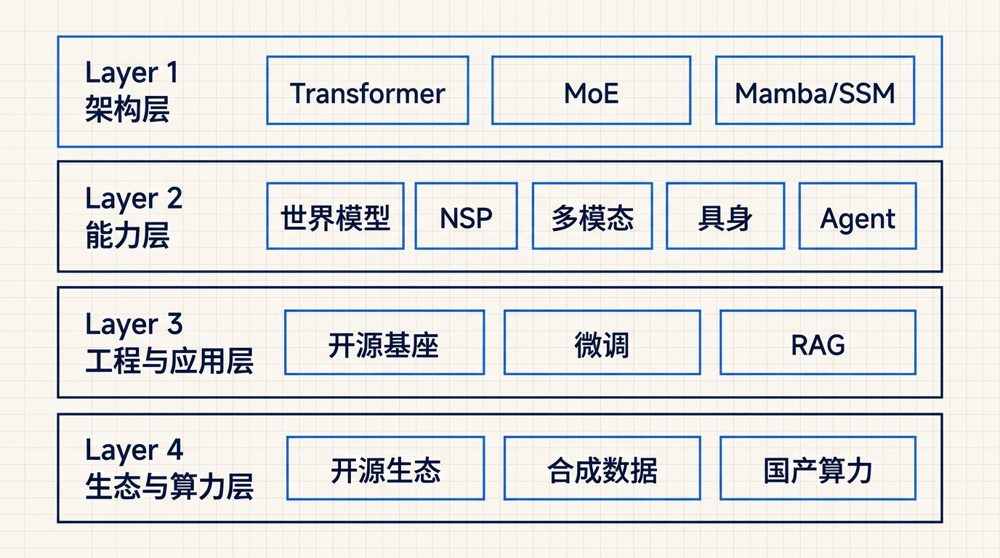
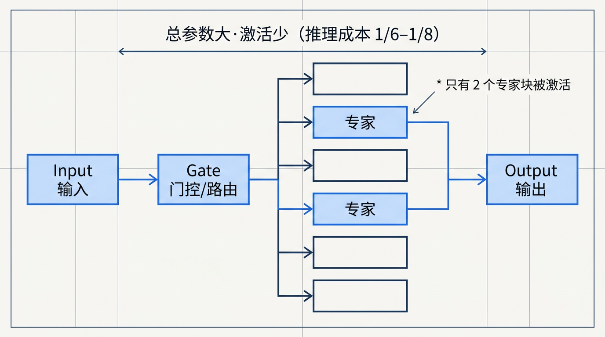
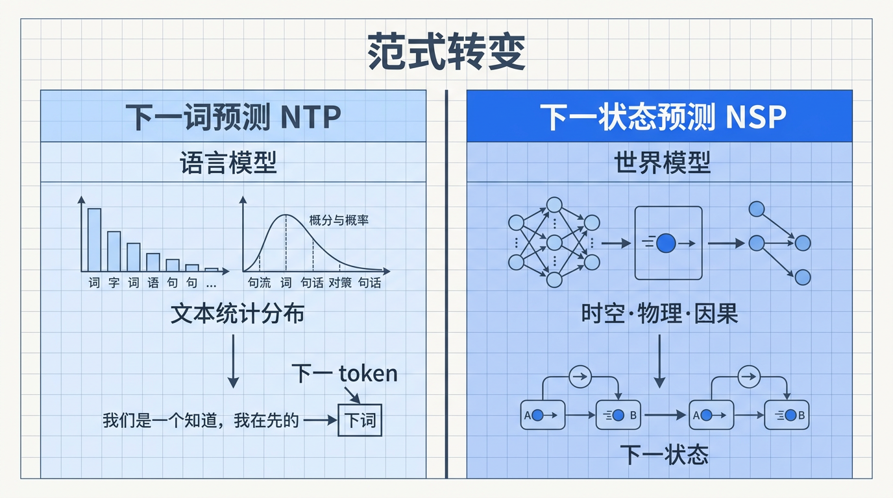
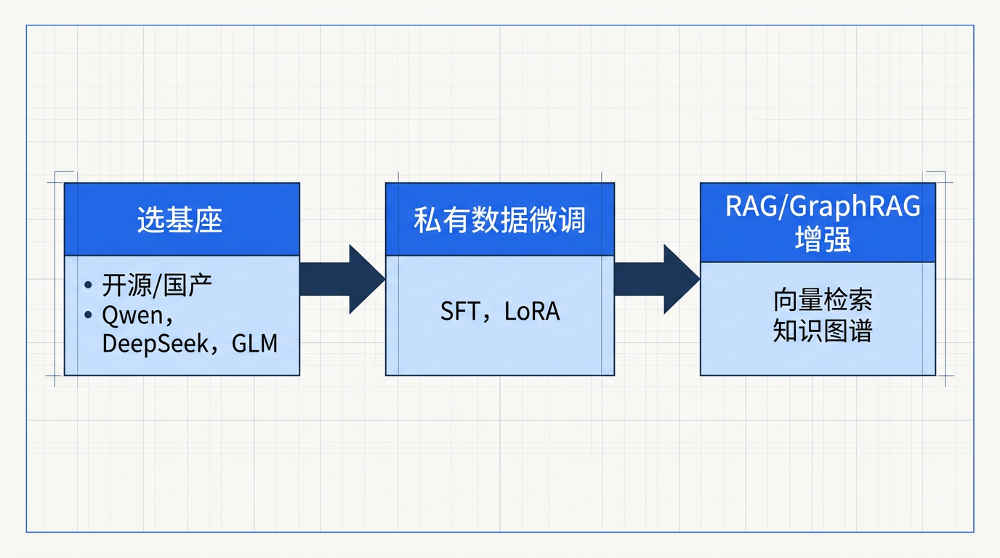
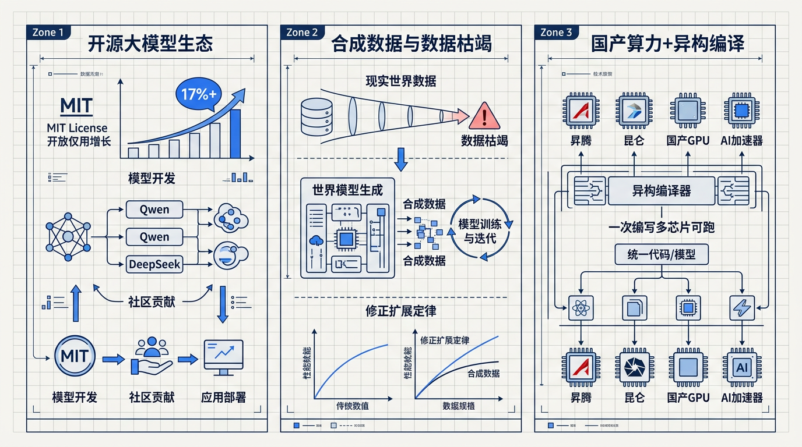

综合最近两年国内报告和新闻可以看出，中国大模型已经基本告别单一的“参数竞赛”，整体技术路线呈现出几条清晰主线：

下面按维度展开。
核心思路：继续用标准 Transformer 作骨干网络，通过更好的预训练范式、优化算法、长上下文机制、RLAIF 等手段不断打磨性能。
这是目前国内最具中国特色、也是竞争力最强的一条技术路线。

结论：MoE 已经从“探索方案”升级为国内主流基础架构——可以认为“中国大模型 = Transformer + MoE 是当前默认配置”。
智源研究院的《2026 十大 AI 技术趋势》明确指出，行业共识正在从语言模型转向能理解物理规律的多模态世界模型[6][7]：

这条路线可以视为中国在 AGI 路线上跟进乃至试图引领的关键技术方向之一。
多份产业报告和投研分析指出，国内越来越多企业采用统一的落地路线[1][9][10]：

这条路线的目标是：在不重新训练巨型模型的前提下，快速建出企业“专属智能系统”。

这条路线本质上是通过“开源+低门槛”，在全球范围内放大中国模型的技术和生态影响力。
结合上面的分析，给你几个可操作的结论：
国内大模型的主流技术路线，可以压缩成一句话：
以 Transformer+MoE 为主架构，以 世界模型 + 多模态 + 多智能体 为能力方向，以 开源基座 + 私有化微调 + RAG/GraphRAG + Agent 编排 为工程路径，底层由 国产异构算力 + 开源编译栈 + 合成数据 提供支撑。
如果你愿意，我可以根据你的角色（例如：算法研究、应用开发、企业架构师）进一步给出对应的“技术路线学习/选型清单”。
[1] 2026年大模型市场规模将超700亿元. https://so.html5.qq.com/page/real/search_news?docid=70000021_825695d9ff437752
[2] 中国AI模型调用量首超美国，专家：技术路线是降低推理成本的核心原因. https://finance.sina.com.cn/stock/t/2026-02-26/doc-inhpcyyk1434260.shtml
[3] 2026年DeepSeek加速迭代的开源大模型引领者. https://www.sohu.com/a/994935205_121852070
[4] 从下载量破亿到生态领跑:Qwen系列崛起背后,中国开源大模型的全球化突围之路. https://blog.csdn.net/2601_94871597/article/details/158238563
[5] Mamba-3惊现AI顶会ICLR 2026！CMU知名华人教授一作首代工作AI. https://finance.sina.com.cn/stock/t/2025-10-13/doc-infttnsk8382614.shtml
[6] 智源研究院发布《2026十大AI技术趋势》—科学网. https://news.sciencenet.cn/htmlnews/2026/1/558462.shtm
[7] 智源发布2026十大AI技术趋势-新华网. https://www.xinhuanet.com/tech/20260108/b99127c88a4640bbab49e5c6294264d2/c.html
[8] DeepSeek之后,智源大模型登Nature:事关“世界模型”统治路线. https://www.36kr.com/p/3664585545867912
[9] 2026 AI大模型技术全景与开发者进阶白皮书 - 腾讯云. https://cloud.tencent.com/developer/article/2611702
[10] 2026年中国AI大模型产业链图谱及投资布局分析. https://www.toutiao.com/article/7616190195561431561/
[11] 和讯投顾王建红:中国大模型反超美国?. https://new.qq.com/rain/a/20260312A0285900